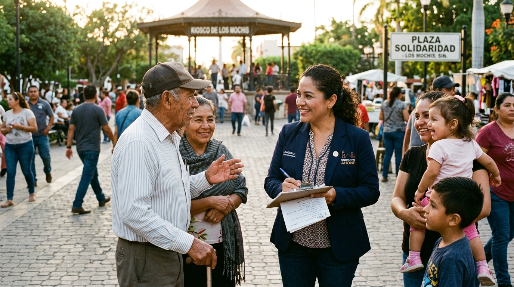

LXV Legislatura de Sinaloa Presidencia de Puntos Constitucionales
Transformación con Justicia Social e Igualdad por Sinaloa
Trabajando con cercanía, lealtad al pueblo de Ahome y firmeza legislativa para garantizar reformas democráticas, derechos plenos para las mujeres y un presupuesto humanista.
Dip. Juana Minerva VázquezDistrito 02 • Ahome / Los Mochis
#MorenaSinaloa#ConElPuebloTodo
Conoce a tu Diputada
Semblanza y Trayectoria Pública
Compromiso probado con la educación cívica, la administración pública honesta y la consolidación de la Cuarta Transformación en Sinaloa.
“El servicio público sólo tiene sentido cuando se ejerce para transformar vidas, defender los derechos del pueblo y no fallar a la confianza ciudadana.”
— Dip. Juana Minerva Vázquez
Abogada, Académica y Servidora del Pueblo
Con una sólida vocación democrática y legal, la Dip. Juana Minerva Vázquez González ha dedicado su vida profesional a la docencia universitaria, el fortalecimiento institucional de los gobiernos locales y la defensa de los derechos sociales.
2024 - Presente
Diputada de la LXV Legislatura
Electa por la ciudadanía de Ahome (Distrito 02). Nombrada Presidenta de la Comisión de Puntos Constitucionales y Gobernación, una de las más trascendentes del Congreso del Estado.
2022 - Presente
Presidenta del Consejo Estatal de Morena Sinaloa
Liderazgo partidista orientado a la unidad, la formación de comités de defensa de la transformación y la participación ciudadana activa.
2021 - 2024
Diputada de la LXIV Legislatura del Congreso de Sinaloa
Destacada participación en reformas a favor de la equidad de género, presupuestos con sentido social, Ley de Voluntad Anticipada y derechos constitucionales.
2018 - 2021
Directora de Planeación e Innovación Gubernamental
H. Ayuntamiento de Ahome. Impulsó la modernización de los servicios públicos municipales, la planeación estratégica y la rendición de cuentas.
2002 - A la fecha
Docencia Universitaria (UAS)
Catedrática en la Facultad de Derecho y Ciencias Políticas de la Universidad Autónoma de Sinaloa (Campus Los Mochis) y docente en la Maestría en Estudios Electorales.
Cercanía con la Gente
Permanente trabajo territorial en colonias, sindicaturas y comunidades rurales de Ahome.
Cero Nepotismo y No Reelección
Impulso a la modernización constitucional para evitar privilegios y asegurar relevos democráticos.
Igualdad Sustantiva
Protección jurídica a las mujeres, erradicación de violencias y empoderamiento económico.
Sustentabilidad y Campo
Defensa del medio ambiente, agua y respaldo a los productores agrícolas y pesqueros del norte de Sinaloa.
Resultados en Tribuna
Iniciativas y Reformas Legislativas
Leyes impulsadas con rigor jurídico para proteger las libertades del pueblo, optimizar el uso de los recursos y consolidar el bienestar en Sinaloa.
Dictamen AprobadoLXV Legislatura
Prohibición de Nepotismo Electoral y Regulación de Reelección Inmediata
Reforma a la Constitución Política del Estado de Sinaloa para impedir que familiares directos ocupen cargos de elección popular en sucesión inmediata, fortaleciendo la equidad democrática y el relevo generacional.
Octubre 2024 Constitución Local
Decretada en LeyLXIV / LXV
Garantía de Presupuestos con Perspectiva de Género e Igualdad Sustantiva
Modificaciones a la Ley de Presupuesto, Contabilidad y Gasto Público para etiquetar partidas inviolables destinadas a refugios, créditos para mujeres emprendedoras y prevención de violencias.
Diciembre 2024 Finanzas & Género
En Comisión DictaminadoraLXV Legislatura
Ley de Fomento a la Economía Circular y Protección de Cuencas Hidrológicas
Normativa integral para incentivar el reciclaje industrial, el tratamiento de aguas residuales en municipios del norte y la preservación de los valles agrícolas de Ahome y El Fuerte.
Enero 2025 Ecología
Aprobada en PlenoLXV Legislatura
Armonización Constitucional de Derechos de Comunidades y Pueblos Originarios
Reconocimiento y garantía de consulta previa, libre e informada a las comunidades y centros ceremoniales Yoreme-Mayo en los municipios del norte de Sinaloa.
Febrero 2025 Derechos Humanos
DecretadaLXIV Legislatura
Ley de Voluntad Anticipada del Estado de Sinaloa
Legislación pionera que salvaguarda la dignidad de los pacientes en etapas terminales y brinda certeza jurídica y humana a las familias sinaloenses.
Noviembre 2023 Salud & Derecho
Punto de AcuerdoLXV Legislatura
Protección y Rescate del Patrimonio Histórico de los Terrenos del Ingenio Azucarero
Exhorto y medidas legislativas para salvaguardar los predios históricos del Ingenio de Los Mochis como espacio de identidad comunitaria, cultural y desarrollo cívico.
Marzo 2025 Ahome / Cultura
¿Deseas consultar el registro oficial de la Gaceta Parlamentaria?
Accede directamente al repositorio de iniciativas, votaciones y diarios de los debates en el portal del H. Congreso del Estado de Sinaloa.
Espacios colegiados donde se analiza a fondo cada reforma, decreto y ley antes de ser sometida a votación en el Pleno.
Presidenta
Comisión de Puntos Constitucionales y Gobernación
Órgano legislativo encargado de dictaminar las reformas a la Constitución del Estado, leyes orgánicas de los poderes públicos, gobernabilidad, procesos electorales y régimen municipal.
Dictaminación de reformas a la Constitución de Sinaloa.
Blindaje contra el nepotismo en candidaturas.
Ley Orgánica de la Administración Pública Estatal.
Secretaria
Comisión de Igualdad, Género, Diversidad e Inclusión
Impulsa ordenamientos para erradicar la discriminación, garantizar la paridad en todos los niveles gubernamentales y proteger los derechos humanos de grupos vulnerables.
Ley de Acceso de las Mujeres a una Vida Libre de Violencia.
Paridad en nombramientos públicos y magistraturas.
Vocal
Comisión de Ecología y Desarrollo Sustentable
Supervisa leyes relacionadas con el equilibrio ecológico, gestión de residuos, conservación de ecosistemas costeros y adaptación al cambio climático en Sinaloa.
Cuidado de los recursos hídricos en el norte del estado.
Inspección ambiental en valles agrícolas y bahías.
Transparencia de Actividades
Agenda Pública de Trabajo
Conoce las sesiones en el Pleno, reuniones de comisiones y visitas directas de atención en colonias y comunidades.
JUE08OCT
Pleno del Congreso 11:00 AM • Culiacán, Sin.
Sesión Ordinaria del Pleno de la LXV Legislatura
Discusión de dictámenes de reforma a la ley de hacienda municipal y presentación de iniciativas ciudadanas turnadas a comisiones.
Programada
VIE09OCT
Puntos Constitucionales 10:00 AM • Sala de Comisiones
Mesa de Trabajo: Dictamen sobre No Nepotismo en Cargos Públicos
Presidencia de la reunión de trabajo con asesores jurídicos y diputados integrantes para afinar el proyecto de dictamen constitucional.
Convocada
SÁB10OCT
Territorio Ahome 09:30 AM • Sindicatura de Topolobampo
Jornada de Audiencia Ciudadana y Gestión Social
Reunión abierta con pescadores, madres de familia y comerciantes para recepción de solicitudes de servicios públicos y gestiones médicas.
En Territorio
LUN12OCT
Módulo de Atención 04:00 PM • Los Mochis, Ahome
Atención Personalizada en Módulo de Enlace Legislativo
Atención a comités de vecinos del Distrito 02 y asesoría jurídica gratuita a familias en el módulo ciudadano.
Abierta
Distrito 02 Local — Ahome
El Pueblo de Ahome al Centro de Nuestras Decisiones
Legislar caminando de la mano con las comunidades, ejidos y sindicaturas. Explora las gestiones, obras y presencia permanente en cada rincón del municipio.
Selecciona una sindicatura para ver gestiones y presencia territorial:
Cabecera Distrital & Módulo Central Presencia Permanente
Los Mochis — Distrito 02 Ahome
Atención directa permanente a comités vecinales de más de 45 colonias de la zona urbana de Los Mochis. Diálogo constante con familias, comerciantes, maestros y jóvenes deportistas.
Gestiones y Resultados Clave:
Canalización de solicitudes de rehabilitación de alumbrado y bacheo en colonias populares.
Asesoría jurídica gratuita permanente en el Módulo de Enlace de Blvd. Rosales e Independencia.
Defensa legislativa de los terrenos históricos del Ingenio Azucarero para uso cultural y cívico.
+14,200 personas atendidas
Mapa Interactivo Distrito 02 Clic en los puntos

Atención directa en audiencias vecinales de Los Mochis y sindicaturas.
Comunicación Directa
Sala de Prensa y Redes Sociales
Sigue el trabajo diario a través de las redes sociales oficiales y los comunicados más recientes del Congreso.
Presidenta de la Comisión de Puntos Constitucionales y Gobernación ⚖️ • Ahome, Sin. 🌽
1,482 124
juanaminervamx Hoy presentamos en el Pleno el avance del dictamen para erradicar el nepotismo. ¡El poder es para servir al pueblo, no a privilegios familiares! 🇲🇽⚖️ #Sinaloa #Morena
HACE 2 DÍAS
2,130 198
juanaminervamx Recorriendo mi querido Ahome, escuchando a las vecinas y comerciantes. Llevamos sus peticiones de servicios públicos y alumbrado con seguimiento puntual. ¡Amor con amor se paga! ❤️🙌
HACE 4 DÍAS
984 76
juanaminervamx Mesa de trabajo de la Comisión de Puntos Constitucionales. Analizando a profundidad cada artículo para garantizar leyes claras, justas y en beneficio de todas las familias sinaloenses. 📑✨
Recursos para Periodistas y Medios de Comunicación
Descarga fotografías oficiales en alta definición, logotipos del Congreso y la semblanza curricular actualizada.
Comunicados de Prensa Oficiales
Copia rápida con un clic para reporteros
Boletín Oficial
Avanza en Comisión dictamen contra nepotismo electoral encabezado por la Dip. Juana Minerva
La Presidenta de la Comisión de Puntos Constitucionales destacó que esta reforma impedirá que familiares directos sucedan de inmediato a alcaldes y legisladores en Sinaloa...
02 Octubre 2026Culiacán / Ahome
Gestión Social
Entregan apoyos y atienden solicitudes ciudadanas en sindicaturas del municipio de Ahome
En gira territorial por Topolobampo e Higuera de Zaragoza, la legisladora reafirmó el compromiso de mantener módulos itinerantes de atención cercana y gratuita...
28 Septiembre 2026Distrito 02 Ahome
Igualdad Sustantiva
Impulsan blindaje presupuestal para programas de apoyo a mujeres jefas de familia en Sinaloa
Como integrante de la Comisión de Género, resaltó que los presupuestos públicos deben etiquetarse obligatoriamente para refugios y créditos productivos de mujeres...
22 Septiembre 2026Congreso de Sinaloa
Atención Ciudadana Digital
Tu Voz y Tus Necesidades Son Nuestra Prioridad
Envía tus solicitudes de apoyo, peticiones para tu colonia o propuestas de reforma de ley directamente al equipo de gestión legislativa de la Diputada Juana Minerva Vázquez.
1
Llena el Formulario
Elige el tipo de gestión y detalla tu colonia o sindicatura.
2
Recibe tu Folio Digital
Se generará un número de seguimiento institucional inmediato.
3
Canalización y Respuesta
Nuestro equipo te contactará por WhatsApp o teléfono con el estatus.
(667) 758-15-00 Ext. 1218
juana.vazquez@congresosinaloa.gob.mx
Formulario de Gestión Ciudadana
Completa tus datos para iniciar tu solicitud ante la oficina de la Diputada.
¡Gestión Registrada Exitosamente!
Hemos recibido tu solicitud institucional. Tu folio único de seguimiento es:
JMV-2026-8492
Tu solicitud ha sido guardada en el sistema. Puedes enviar copia directa al WhatsApp oficial de enlace para agilizar la respuesta o consultar su progreso en tiempo real.
Consulta en tiempo real la bitácora y avance de tu trámite con la oficina parlamentaria.
Folios de prueba:
Compromiso Ético
Transparencia y Rendición de Cuentas
En apego a los principios de la 4T: No mentir, no robar y no traicionar al pueblo. Consulta las percepciones y apoyos de gestión conforme al portal oficial del Congreso.
Dieta Mensual Neta
$103,899.20 MXN/mes*
* Monto oficial neto tras retenciones fiscales de ley en la LXV Legislatura.
Transmisión Oficial | H. Congreso del Estado de Sinaloa
LXV Legislatura de Sinaloa • Canal Oficial: @congresosinaloatv
Sigue en directo las Sesiones Ordinarias del Pleno (martes y jueves a las 11:00 AM) y las mesas dictaminadoras de la Comisión de Puntos Constitucionales y Gobernación, presididas por la Dip. Juana Minerva Vázquez González.